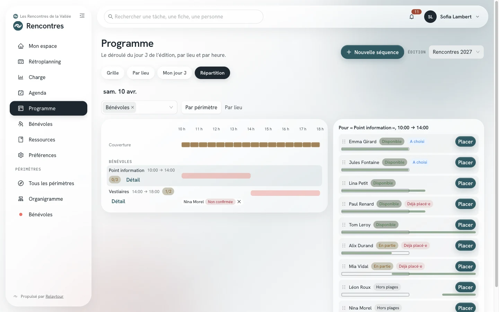

Une petite équipe prépare une course en relais qui dure une journée. Ce cas pratique montre qu'une équipe réduite utilise seulement une partie de Relaytour.
Ce cas pratique propose un chemin parmi d'autres. Chaque étape renvoie au mode d'emploi qui décrit l'écran en détail.
Le cas
Une journée, un lieu et des bénévoles par séquence
Le club de course de l'organisation d'exemple organise chaque automne une course en relais de six heures, sur un parcours unique. Quatre personnes du club la préparent.
Le jour de la course, une trentaine de bénévoles se relaient à l'accueil, au chronométrage, au ravitaillement et au rangement. La plupart n'ont pas de compte dans Relaytour.
Avant de commencer
Ce que vous mettez en place
La course reçoit sa propre activité, distincte de la saison du club. Elle a sa propre équipe, son programme et ses bénévoles. Un admin de l'organisation la crée, puis nomme une personne admin de l'activité.
Une activité légère
/<activité>/admin/activites
Nature « Événement »Chaque course annuelle devient une édition. L'édition suivante reprend ses tâches.
Deux périmètres« Organisation » porte le parcours, les autorisations et le chronométrage. « Accueil et ravitaillement » porte l'accueil des équipes et des bénévoles.
Module BénévolesIl ouvre les appels à bénévoles et la vue « Répartition » du programme.
Phases par défautLes quatre phases proposées suffisent pour une épreuve de ce format.
Les délais ci-dessous sont indicatifs. Ils se comptent depuis le jour de la course.
1. Trois mois avant : créer l'édition
L'admin de l'activité crée l'édition sur un seul jour. Si l'équipe tient déjà ses tâches dans un tableur, elle les importe depuis le rétroplanning. L'année suivante, elle reprend les tâches de cette édition.
L'admin crée le lieu de la course. L'équipe crée ensuite une séquence par poste : l'accueil, le chronométrage, le ravitaillement, le rangement. Chaque séquence indique les renforts recherchés et les consignes publiques.
L'admin ouvre un appel sur toute l'édition et diffuse son adresse : affiche du club, réseaux sociaux, lettre d'information. Le formulaire public de l'équipe affiche aussi cette adresse.
L'équipe accepte les candidatures, puis place les personnes disponibles dans les séquences incomplètes. Une liste de bénévoles tenue ailleurs, comme un formulaire en ligne, s'importe dans le même programme.
L'équipe suit le programme et coche ses tâches depuis l'application installée sur son téléphone. Après la course, elle note dans une fiche méthode ce qui change pour l'année suivante.
La vue « Répartition » du programme montre, par tranche de 30 minutes, les renforts recherchés et les places déjà pourvues. Pour la séquence choisie, elle classe les bénévoles selon leurs disponibilités. Le bouton « Placer » leur crée une place à confirmer.

La vue « Répartition » du programme, sur l'organisation d'exemple.
Une personne qui a donné son adresse et accepté d'être prévenue reçoit son lien personnel à sa première place. Elle confirme ensuite par un bouton de son espace bénévole.
Bonnes pratiques
Trois habitudes pour une petite équipe
Des consignes sans coordonnée personnelle
Les consignes d'une séquence sont publiques. Écrivez-y le point de rendez-vous et la tenue, avec une adresse de rôle du club plutôt qu'un numéro personnel.
Des renforts réalistes
Indiquez le nombre de bénévoles réellement utile à chaque séquence. Les candidatures en trop rejoignent la liste d'attente, et l'équipe les accepte au besoin.
Une seule personne admin
Une personne admin de l'activité suffit. Les autres membres de l'équipe écrivent dans leur périmètre : ils créent les séquences, ouvrent des appels et répartissent.
Pour rester simple
Ce dont vous n'avez pas besoin
Les modules « Agenda », « Documents » et « Classement » restent inactifs. Une équipe de quatre personnes n'a pas besoin d'un calendrier partagé.
L'organigramme, les tâches partagées et les phases personnalisées servent les grandes équipes. Votre épreuve s'en passe.